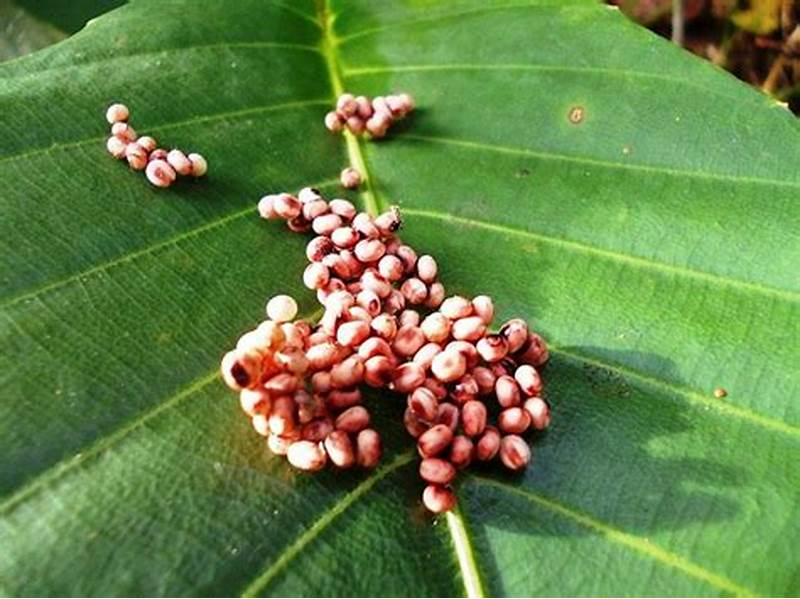

Butterfly Egg Care Management
- Choose the correct host plant for the butterfly species.
- Provide fresh, healthy host plant leaves.
- Offer suitable stems in bottles of water to keep them hydrated.
- Maintain a clean and clutter-free environment.
- Provide appropriate light and temperature conditions.
- Replace leaves regularly to prevent drying and falling.
- Inspect leaves for damage, disease, or pests.
- Maintain appropriate humidity levels.
- Ensure proper ventilation.
- Collect eggs daily to protect them from predators, parasites, and disease.
- Handle eggs with extreme care.
- Store eggs in clean, breathable containers with a small amount of moisture.
- Maintain a stable temperature for the eggs.
- Ensure proper ventilation in the storage container.
- Regularly inspect eggs for signs of disease or infestation.
- Research species-specific needs.
- Keep detailed records of the eggs.
- Quarantine eggs collected from the wild.
- Prioritize ethical and sustainable breeding practices.
